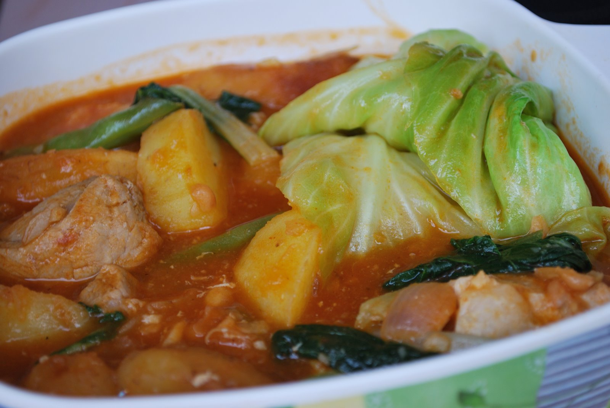

Pochero

Description
This Filipino stew incorporates ingredients such as tomatoes, saba bananas, and bok choy to make it a satisfying and hearty meal. The bananas and a little sugar add a sweet flavor to the dish, making it a delicious surprise. Plus, this recipe makes use of all its meaty variations - pork, beef, and chicken - so you don't have to choose!
Ingredients
- 2 tablespoons cooking oil
- 1 piece onion, diced
- 4 cloves garlic, minced
- 1/2 kilo pork, cut into 1-1/2 cubes
- 1/2 kilo beef, cubed
- 1/2 kilo chicken, cut into small parts
- 2 pieces tomatoes, diced
- 2 tablespoons fish sauce
- 2 cups water
- 2 pieces potatoes, quartered and then halved
- 1 can tomato sauce
- 3-4 ieces banana, plantain
- 1 bunch bok choy, baby or regular sized
- 1 head cabbage
- Salt, to taste
- 2 pieces eggplant, grilled
Steps
- StepHeat the oil in a deep pot. Sauté the onion for a minute and then add the garlic. Add the pork cubes, beef and chicken. Stir in the tomatoes and continue to cook until all the meat have browned.s
- Pour in the fish sauce. Let it simmer for about 3-5 minutes.
- Add the water and bring to a boil. Simmer while the pot is covered until all the meat is tender (about 30 to 40 minutes).
- Add the potatoes and tomato sauce. Stir. Simmer again for about 5-6 minutes. Season according to your taste by adding either salt or more fish sauce.
- Add the sliced saba and continue to cook until bananas are tender. Add the Bok choy leaves and cabbage, turn off the heat and cover. Let it stand for about 5 minutes.
- Serve with diced eggplant and fish bagoong on the side.
Source